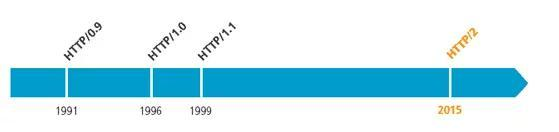
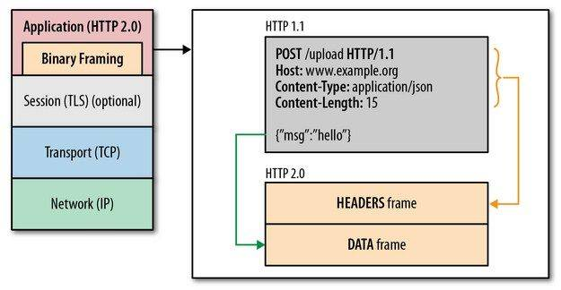
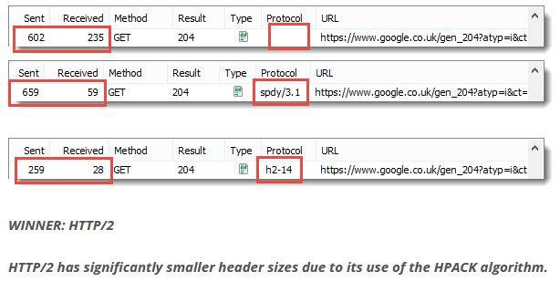
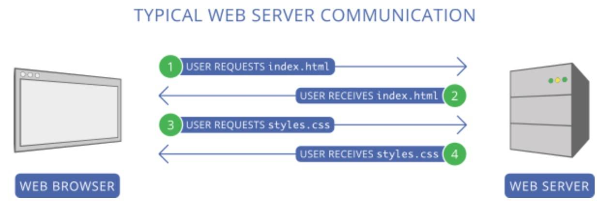
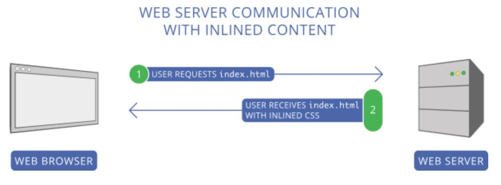
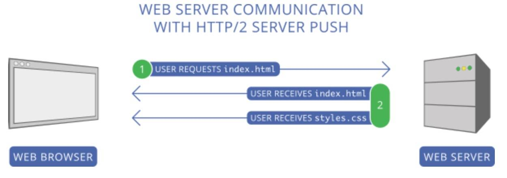
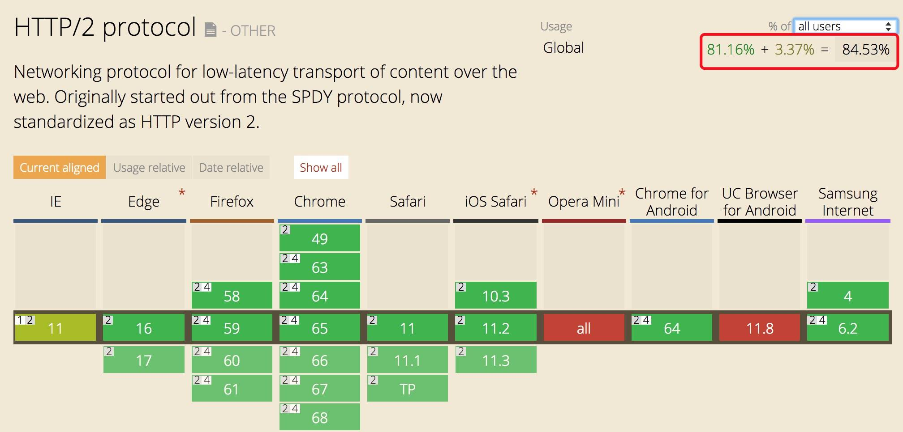

<!DOCTYPE html>
<html lang="zh-CN">
  <head>
    <meta charset="utf-8">
    <meta name="viewport" content="width=device-width,initial-scale=1">
    <title>http2 详情 | 小武子知识库</title>
    <meta name="description" content="用心，谈技术。大前端">
    <meta name="generator" content="VuePress 1.3.1">
    <link rel="icon" href="/hero.jpg">
    
    <link rel="preload" href="/assets/css/0.styles.23dd1510.css" as="style"><link rel="preload" href="/assets/js/app.5cec2f39.js" as="script"><link rel="preload" href="/assets/js/2.c7f5c1a5.js" as="script"><link rel="preload" href="/assets/js/36.69238be1.js" as="script"><link rel="preload" href="/assets/js/3.fb5a4386.js" as="script"><link rel="prefetch" href="/assets/js/10.b5814c7f.js"><link rel="prefetch" href="/assets/js/100.07b34e28.js"><link rel="prefetch" href="/assets/js/101.85641750.js"><link rel="prefetch" href="/assets/js/102.b94ccfb4.js"><link rel="prefetch" href="/assets/js/103.fd760c7d.js"><link rel="prefetch" href="/assets/js/104.d4b2061c.js"><link rel="prefetch" href="/assets/js/105.e7327236.js"><link rel="prefetch" href="/assets/js/106.491c9e83.js"><link rel="prefetch" href="/assets/js/107.ebe78b9b.js"><link rel="prefetch" href="/assets/js/108.ff0b8f9f.js"><link rel="prefetch" href="/assets/js/109.53859499.js"><link rel="prefetch" href="/assets/js/11.da8fdbef.js"><link rel="prefetch" href="/assets/js/110.f6acf042.js"><link rel="prefetch" href="/assets/js/111.7691157f.js"><link rel="prefetch" href="/assets/js/112.826e14a0.js"><link rel="prefetch" href="/assets/js/113.1afdd391.js"><link rel="prefetch" href="/assets/js/114.288aca3b.js"><link rel="prefetch" href="/assets/js/115.3a85f2d9.js"><link rel="prefetch" href="/assets/js/116.42c948fb.js"><link rel="prefetch" href="/assets/js/117.111a1770.js"><link rel="prefetch" href="/assets/js/118.3149b485.js"><link rel="prefetch" href="/assets/js/119.02bc6666.js"><link rel="prefetch" href="/assets/js/12.4a9bcd22.js"><link rel="prefetch" href="/assets/js/120.8e4d2e91.js"><link rel="prefetch" href="/assets/js/121.fdcc81f6.js"><link rel="prefetch" href="/assets/js/122.d5f42efd.js"><link rel="prefetch" href="/assets/js/123.5022266e.js"><link rel="prefetch" href="/assets/js/124.9d12d12a.js"><link rel="prefetch" href="/assets/js/125.f741e6b5.js"><link rel="prefetch" href="/assets/js/126.8c2dfe44.js"><link rel="prefetch" href="/assets/js/127.83125c07.js"><link rel="prefetch" href="/assets/js/128.9d01863d.js"><link rel="prefetch" href="/assets/js/129.f2b21369.js"><link rel="prefetch" href="/assets/js/13.73c0cfc3.js"><link rel="prefetch" href="/assets/js/130.48cdd5af.js"><link rel="prefetch" href="/assets/js/131.64c4a3c0.js"><link rel="prefetch" href="/assets/js/132.796f7659.js"><link rel="prefetch" href="/assets/js/133.b499230d.js"><link rel="prefetch" href="/assets/js/134.b215f97e.js"><link rel="prefetch" href="/assets/js/135.8ea8b669.js"><link rel="prefetch" href="/assets/js/136.b06641b6.js"><link rel="prefetch" href="/assets/js/137.1b7b48bc.js"><link rel="prefetch" href="/assets/js/138.e1ec7855.js"><link rel="prefetch" href="/assets/js/139.b7f13cc4.js"><link rel="prefetch" href="/assets/js/14.b1ea70cc.js"><link rel="prefetch" href="/assets/js/140.e5337962.js"><link rel="prefetch" href="/assets/js/141.720c7160.js"><link rel="prefetch" href="/assets/js/142.f9551284.js"><link rel="prefetch" href="/assets/js/143.70deff1f.js"><link rel="prefetch" href="/assets/js/144.cd44ec8a.js"><link rel="prefetch" href="/assets/js/145.1afa8a09.js"><link rel="prefetch" href="/assets/js/146.e3b11351.js"><link rel="prefetch" href="/assets/js/147.976a44c8.js"><link rel="prefetch" href="/assets/js/148.2afec952.js"><link rel="prefetch" href="/assets/js/149.cf7f199d.js"><link rel="prefetch" href="/assets/js/15.56696330.js"><link rel="prefetch" href="/assets/js/150.a2d0a5d4.js"><link rel="prefetch" href="/assets/js/151.a049ed48.js"><link rel="prefetch" href="/assets/js/152.2f22a1c3.js"><link rel="prefetch" href="/assets/js/153.4347e5cb.js"><link rel="prefetch" href="/assets/js/154.45d54c6f.js"><link rel="prefetch" href="/assets/js/155.64eaf6af.js"><link rel="prefetch" href="/assets/js/156.8b88a0d8.js"><link rel="prefetch" href="/assets/js/157.8964afca.js"><link rel="prefetch" href="/assets/js/158.d64bdce8.js"><link rel="prefetch" href="/assets/js/159.c2556d56.js"><link rel="prefetch" href="/assets/js/16.e41b6458.js"><link rel="prefetch" href="/assets/js/160.5bff0051.js"><link rel="prefetch" href="/assets/js/161.73c137dc.js"><link rel="prefetch" href="/assets/js/162.0a9070ee.js"><link rel="prefetch" href="/assets/js/163.1e096356.js"><link rel="prefetch" href="/assets/js/164.87a33af9.js"><link rel="prefetch" href="/assets/js/165.ff8a0f6a.js"><link rel="prefetch" href="/assets/js/166.27e59c40.js"><link rel="prefetch" href="/assets/js/167.d0a9fb1f.js"><link rel="prefetch" href="/assets/js/168.4933bcac.js"><link rel="prefetch" href="/assets/js/169.f20c45ea.js"><link rel="prefetch" href="/assets/js/17.21581668.js"><link rel="prefetch" href="/assets/js/170.fe457a89.js"><link rel="prefetch" href="/assets/js/171.6b91d461.js"><link rel="prefetch" href="/assets/js/172.11f4bca0.js"><link rel="prefetch" href="/assets/js/173.d15c78ea.js"><link rel="prefetch" href="/assets/js/174.72543e96.js"><link rel="prefetch" href="/assets/js/175.069c3494.js"><link rel="prefetch" href="/assets/js/176.c2e2c98a.js"><link rel="prefetch" href="/assets/js/177.37101b5b.js"><link rel="prefetch" href="/assets/js/178.600b96c5.js"><link rel="prefetch" href="/assets/js/179.df3b7c6c.js"><link rel="prefetch" href="/assets/js/18.25841ce0.js"><link rel="prefetch" href="/assets/js/180.51e1c495.js"><link rel="prefetch" href="/assets/js/181.523eafa8.js"><link rel="prefetch" href="/assets/js/182.a9e891e9.js"><link rel="prefetch" href="/assets/js/183.40e933ed.js"><link rel="prefetch" href="/assets/js/184.701292ad.js"><link rel="prefetch" href="/assets/js/185.fb79a702.js"><link rel="prefetch" href="/assets/js/186.56f2a58d.js"><link rel="prefetch" href="/assets/js/187.f0d3289c.js"><link rel="prefetch" href="/assets/js/188.d4cb80a3.js"><link rel="prefetch" href="/assets/js/189.f074ffda.js"><link rel="prefetch" href="/assets/js/19.8e09c325.js"><link rel="prefetch" href="/assets/js/190.511d773f.js"><link rel="prefetch" href="/assets/js/191.4f1ee897.js"><link rel="prefetch" href="/assets/js/192.4591692e.js"><link rel="prefetch" href="/assets/js/193.01cd668b.js"><link rel="prefetch" href="/assets/js/194.08cb9098.js"><link rel="prefetch" href="/assets/js/195.2a210945.js"><link rel="prefetch" href="/assets/js/196.8f281b36.js"><link rel="prefetch" href="/assets/js/197.715ad42b.js"><link rel="prefetch" href="/assets/js/198.c2ae4a9d.js"><link rel="prefetch" href="/assets/js/199.3481e9b8.js"><link rel="prefetch" href="/assets/js/20.f533081f.js"><link rel="prefetch" href="/assets/js/200.dd548cd9.js"><link rel="prefetch" href="/assets/js/201.5035942d.js"><link rel="prefetch" href="/assets/js/202.32bf2ce7.js"><link rel="prefetch" href="/assets/js/203.8f07619e.js"><link rel="prefetch" href="/assets/js/204.56c49c76.js"><link rel="prefetch" href="/assets/js/205.bc807cdc.js"><link rel="prefetch" href="/assets/js/206.62cb4ddf.js"><link rel="prefetch" href="/assets/js/207.e749c6df.js"><link rel="prefetch" href="/assets/js/208.b80d8c2a.js"><link rel="prefetch" href="/assets/js/209.cfe04513.js"><link rel="prefetch" href="/assets/js/21.3a5329b4.js"><link rel="prefetch" href="/assets/js/210.519413f3.js"><link rel="prefetch" href="/assets/js/211.d92713d6.js"><link rel="prefetch" href="/assets/js/212.8cefc754.js"><link rel="prefetch" href="/assets/js/213.d49143a0.js"><link rel="prefetch" href="/assets/js/214.b3d5808d.js"><link rel="prefetch" href="/assets/js/215.817105f7.js"><link rel="prefetch" href="/assets/js/216.0c6e92b7.js"><link rel="prefetch" href="/assets/js/217.9d6d4d24.js"><link rel="prefetch" href="/assets/js/218.0783ce2c.js"><link rel="prefetch" href="/assets/js/219.d9a0320a.js"><link rel="prefetch" href="/assets/js/22.26a67605.js"><link rel="prefetch" href="/assets/js/220.2ac054a2.js"><link rel="prefetch" href="/assets/js/221.29d1d5a7.js"><link rel="prefetch" href="/assets/js/222.8b6627fb.js"><link rel="prefetch" href="/assets/js/223.daaa585e.js"><link rel="prefetch" href="/assets/js/224.0ed4db00.js"><link rel="prefetch" href="/assets/js/225.60706ef1.js"><link rel="prefetch" href="/assets/js/226.61cfee4f.js"><link rel="prefetch" href="/assets/js/227.1830b474.js"><link rel="prefetch" href="/assets/js/228.4289e16f.js"><link rel="prefetch" href="/assets/js/229.73603c1e.js"><link rel="prefetch" href="/assets/js/23.185b8fea.js"><link rel="prefetch" href="/assets/js/230.dfdd22e0.js"><link rel="prefetch" href="/assets/js/231.54dc2935.js"><link rel="prefetch" href="/assets/js/232.39d5466d.js"><link rel="prefetch" href="/assets/js/233.2e7de26f.js"><link rel="prefetch" href="/assets/js/234.efb92b3b.js"><link rel="prefetch" href="/assets/js/235.1f11fb8a.js"><link rel="prefetch" href="/assets/js/236.c5c04089.js"><link rel="prefetch" href="/assets/js/237.2e8e3b88.js"><link rel="prefetch" href="/assets/js/238.f830a317.js"><link rel="prefetch" href="/assets/js/239.638d929a.js"><link rel="prefetch" href="/assets/js/24.2900701c.js"><link rel="prefetch" href="/assets/js/240.c8a40bdf.js"><link rel="prefetch" href="/assets/js/241.02d7316c.js"><link rel="prefetch" href="/assets/js/242.99b69bbe.js"><link rel="prefetch" href="/assets/js/243.efcc034c.js"><link rel="prefetch" href="/assets/js/244.0322eaa5.js"><link rel="prefetch" href="/assets/js/245.b20abfb3.js"><link rel="prefetch" href="/assets/js/246.d2319452.js"><link rel="prefetch" href="/assets/js/247.fadf4eaa.js"><link rel="prefetch" href="/assets/js/248.6bb6b5b4.js"><link rel="prefetch" href="/assets/js/249.de37a8cf.js"><link rel="prefetch" href="/assets/js/25.21c8e8c5.js"><link rel="prefetch" href="/assets/js/250.1719e76b.js"><link rel="prefetch" href="/assets/js/251.81df44b0.js"><link rel="prefetch" href="/assets/js/252.94f7c266.js"><link rel="prefetch" href="/assets/js/253.8cbf5ba7.js"><link rel="prefetch" href="/assets/js/254.c6c2bef7.js"><link rel="prefetch" href="/assets/js/255.61c79506.js"><link rel="prefetch" href="/assets/js/256.ab2034f5.js"><link rel="prefetch" href="/assets/js/257.bd5b9362.js"><link rel="prefetch" href="/assets/js/258.bbb9d650.js"><link rel="prefetch" href="/assets/js/259.bd5813c2.js"><link rel="prefetch" href="/assets/js/26.60d7b558.js"><link rel="prefetch" href="/assets/js/260.d0f013dd.js"><link rel="prefetch" href="/assets/js/261.fddfd9a7.js"><link rel="prefetch" href="/assets/js/262.7d14e54b.js"><link rel="prefetch" href="/assets/js/263.487bb636.js"><link rel="prefetch" href="/assets/js/264.6f1b0f43.js"><link rel="prefetch" href="/assets/js/265.d7858d1b.js"><link rel="prefetch" href="/assets/js/266.d380f150.js"><link rel="prefetch" href="/assets/js/267.3f4c5a00.js"><link rel="prefetch" href="/assets/js/268.1df8d584.js"><link rel="prefetch" href="/assets/js/269.b33d4808.js"><link rel="prefetch" href="/assets/js/27.95a24cb5.js"><link rel="prefetch" href="/assets/js/270.3493c293.js"><link rel="prefetch" href="/assets/js/271.47074f25.js"><link rel="prefetch" href="/assets/js/272.9af75619.js"><link rel="prefetch" href="/assets/js/273.94557613.js"><link rel="prefetch" href="/assets/js/274.fe810bb0.js"><link rel="prefetch" href="/assets/js/275.906fb288.js"><link rel="prefetch" href="/assets/js/276.d98bdc1a.js"><link rel="prefetch" href="/assets/js/277.d2acfa54.js"><link rel="prefetch" href="/assets/js/278.09336bf0.js"><link rel="prefetch" href="/assets/js/279.3afe3dbb.js"><link rel="prefetch" href="/assets/js/28.ef11be2b.js"><link rel="prefetch" href="/assets/js/280.e8d09b32.js"><link rel="prefetch" href="/assets/js/281.b4569cbe.js"><link rel="prefetch" href="/assets/js/282.248534c0.js"><link rel="prefetch" href="/assets/js/283.30a11ad2.js"><link rel="prefetch" href="/assets/js/284.fba9130b.js"><link rel="prefetch" href="/assets/js/285.f0cb4e2f.js"><link rel="prefetch" href="/assets/js/286.8cb89e4c.js"><link rel="prefetch" href="/assets/js/29.bd377a97.js"><link rel="prefetch" href="/assets/js/30.1018cb9a.js"><link rel="prefetch" href="/assets/js/31.65acd4bc.js"><link rel="prefetch" href="/assets/js/32.73535b81.js"><link rel="prefetch" href="/assets/js/33.14317bd0.js"><link rel="prefetch" href="/assets/js/34.f6a044c9.js"><link rel="prefetch" href="/assets/js/35.fb5f8a10.js"><link rel="prefetch" href="/assets/js/37.6f5cabf9.js"><link rel="prefetch" href="/assets/js/38.ad152872.js"><link rel="prefetch" href="/assets/js/39.1acf2b55.js"><link rel="prefetch" href="/assets/js/4.a9938d2d.js"><link rel="prefetch" href="/assets/js/40.27baa40a.js"><link rel="prefetch" href="/assets/js/41.bd3838df.js"><link rel="prefetch" href="/assets/js/42.3a02833e.js"><link rel="prefetch" href="/assets/js/43.a47b25c1.js"><link rel="prefetch" href="/assets/js/44.d83d2274.js"><link rel="prefetch" href="/assets/js/45.69a90735.js"><link rel="prefetch" href="/assets/js/46.33ee6915.js"><link rel="prefetch" href="/assets/js/47.b8c17fc7.js"><link rel="prefetch" href="/assets/js/48.9681543d.js"><link rel="prefetch" href="/assets/js/49.1ab5dff6.js"><link rel="prefetch" href="/assets/js/5.162e5946.js"><link rel="prefetch" href="/assets/js/50.b0dccb6e.js"><link rel="prefetch" href="/assets/js/51.53635af6.js"><link rel="prefetch" href="/assets/js/52.d42625d7.js"><link rel="prefetch" href="/assets/js/53.b936ac66.js"><link rel="prefetch" href="/assets/js/54.ebd1583d.js"><link rel="prefetch" href="/assets/js/55.2ff93588.js"><link rel="prefetch" href="/assets/js/56.270acd90.js"><link rel="prefetch" href="/assets/js/57.314b9920.js"><link rel="prefetch" href="/assets/js/58.72ac1a0a.js"><link rel="prefetch" href="/assets/js/59.02556e27.js"><link rel="prefetch" href="/assets/js/6.c3b83bcf.js"><link rel="prefetch" href="/assets/js/60.d596573c.js"><link rel="prefetch" href="/assets/js/61.17ee6825.js"><link rel="prefetch" href="/assets/js/62.d4c18fad.js"><link rel="prefetch" href="/assets/js/63.b01ac5ae.js"><link rel="prefetch" href="/assets/js/64.41407cb9.js"><link rel="prefetch" href="/assets/js/65.7f84613c.js"><link rel="prefetch" href="/assets/js/66.ec783047.js"><link rel="prefetch" href="/assets/js/67.c1b026c6.js"><link rel="prefetch" href="/assets/js/68.c69beec9.js"><link rel="prefetch" href="/assets/js/69.a66fe805.js"><link rel="prefetch" href="/assets/js/7.a08b6725.js"><link rel="prefetch" href="/assets/js/70.9393ee09.js"><link rel="prefetch" href="/assets/js/71.161bc898.js"><link rel="prefetch" href="/assets/js/72.3dd00747.js"><link rel="prefetch" href="/assets/js/73.370a700a.js"><link rel="prefetch" href="/assets/js/74.76528b70.js"><link rel="prefetch" href="/assets/js/75.adcc6379.js"><link rel="prefetch" href="/assets/js/76.2673621c.js"><link rel="prefetch" href="/assets/js/77.e9878ae8.js"><link rel="prefetch" href="/assets/js/78.845817b4.js"><link rel="prefetch" href="/assets/js/79.21691a0a.js"><link rel="prefetch" href="/assets/js/8.d944b1d8.js"><link rel="prefetch" href="/assets/js/80.d2ea5619.js"><link rel="prefetch" href="/assets/js/81.e78ca45b.js"><link rel="prefetch" href="/assets/js/82.0fa2f834.js"><link rel="prefetch" href="/assets/js/83.37ab45d2.js"><link rel="prefetch" href="/assets/js/84.db0297c8.js"><link rel="prefetch" href="/assets/js/85.d75f0c5e.js"><link rel="prefetch" href="/assets/js/86.9904138a.js"><link rel="prefetch" href="/assets/js/87.56c7069a.js"><link rel="prefetch" href="/assets/js/88.6d2502e8.js"><link rel="prefetch" href="/assets/js/89.fedaf339.js"><link rel="prefetch" href="/assets/js/9.52d49724.js"><link rel="prefetch" href="/assets/js/90.16674773.js"><link rel="prefetch" href="/assets/js/91.403e7765.js"><link rel="prefetch" href="/assets/js/92.f3b26c8b.js"><link rel="prefetch" href="/assets/js/93.8b89b16b.js"><link rel="prefetch" href="/assets/js/94.8e139bca.js"><link rel="prefetch" href="/assets/js/95.d509292c.js"><link rel="prefetch" href="/assets/js/96.d65bea23.js"><link rel="prefetch" href="/assets/js/97.efeb8356.js"><link rel="prefetch" href="/assets/js/98.942a9d97.js"><link rel="prefetch" href="/assets/js/99.3d19a8ef.js">
    <link rel="stylesheet" href="/assets/css/0.styles.23dd1510.css">
  </head>
  <body>
    <div id="app" data-server-rendered="true"><div class="theme-container"><header class="navbar"><div class="sidebar-button"><svg xmlns="http://www.w3.org/2000/svg" aria-hidden="true" role="img" viewBox="0 0 448 512" class="icon"><path fill="currentColor" d="M436 124H12c-6.627 0-12-5.373-12-12V80c0-6.627 5.373-12 12-12h424c6.627 0 12 5.373 12 12v32c0 6.627-5.373 12-12 12zm0 160H12c-6.627 0-12-5.373-12-12v-32c0-6.627 5.373-12 12-12h424c6.627 0 12 5.373 12 12v32c0 6.627-5.373 12-12 12zm0 160H12c-6.627 0-12-5.373-12-12v-32c0-6.627 5.373-12 12-12h424c6.627 0 12 5.373 12 12v32c0 6.627-5.373 12-12 12z"></path></svg></div> <a href="/" class="home-link router-link-active"><!----> <span class="site-name">小武子知识库</span></a> <div class="links"><div class="search-box"><input aria-label="Search" autocomplete="off" spellcheck="false" value=""> <!----></div> <nav class="nav-links can-hide"><div class="nav-item"><a href="/" class="nav-link">
  首页
</a></div><div class="nav-item"><a href="/js/" class="nav-link">
  javascript
</a></div><div class="nav-item"><a href="/css/" class="nav-link">
  css
</a></div><div class="nav-item"><a href="/html5/" class="nav-link">
  HTML5
</a></div><div class="nav-item"><a href="/tool/" class="nav-link">
  工具
</a></div><div class="nav-item"><a href="/project/" class="nav-link">
  软件工程
</a></div><div class="nav-item"><a href="/cs/" class="nav-link router-link-active">
  计算机基础
</a></div><div class="nav-item"><a href="/interview/" class="nav-link">
  面试题
</a></div><div class="nav-item"><a href="/materials/" class="nav-link">
  资料收集
</a></div><div class="nav-item"><a href="/about/" class="nav-link">
  关于作者
</a></div><div class="nav-item"><a href="https://www.github.com/fttony" target="_blank" rel="noopener noreferrer" class="nav-link external">
  GitHub
  <svg xmlns="http://www.w3.org/2000/svg" aria-hidden="true" x="0px" y="0px" viewBox="0 0 100 100" width="15" height="15" class="icon outbound"><path fill="currentColor" d="M18.8,85.1h56l0,0c2.2,0,4-1.8,4-4v-32h-8v28h-48v-48h28v-8h-32l0,0c-2.2,0-4,1.8-4,4v56C14.8,83.3,16.6,85.1,18.8,85.1z"></path> <polygon fill="currentColor" points="45.7,48.7 51.3,54.3 77.2,28.5 77.2,37.2 85.2,37.2 85.2,14.9 62.8,14.9 62.8,22.9 71.5,22.9"></polygon></svg></a></div> <!----></nav></div></header> <div class="sidebar-mask"></div> <aside class="sidebar"><nav class="nav-links"><div class="nav-item"><a href="/" class="nav-link">
  首页
</a></div><div class="nav-item"><a href="/js/" class="nav-link">
  javascript
</a></div><div class="nav-item"><a href="/css/" class="nav-link">
  css
</a></div><div class="nav-item"><a href="/html5/" class="nav-link">
  HTML5
</a></div><div class="nav-item"><a href="/tool/" class="nav-link">
  工具
</a></div><div class="nav-item"><a href="/project/" class="nav-link">
  软件工程
</a></div><div class="nav-item"><a href="/cs/" class="nav-link router-link-active">
  计算机基础
</a></div><div class="nav-item"><a href="/interview/" class="nav-link">
  面试题
</a></div><div class="nav-item"><a href="/materials/" class="nav-link">
  资料收集
</a></div><div class="nav-item"><a href="/about/" class="nav-link">
  关于作者
</a></div><div class="nav-item"><a href="https://www.github.com/fttony" target="_blank" rel="noopener noreferrer" class="nav-link external">
  GitHub
  <svg xmlns="http://www.w3.org/2000/svg" aria-hidden="true" x="0px" y="0px" viewBox="0 0 100 100" width="15" height="15" class="icon outbound"><path fill="currentColor" d="M18.8,85.1h56l0,0c2.2,0,4-1.8,4-4v-32h-8v28h-48v-48h28v-8h-32l0,0c-2.2,0-4,1.8-4,4v56C14.8,83.3,16.6,85.1,18.8,85.1z"></path> <polygon fill="currentColor" points="45.7,48.7 51.3,54.3 77.2,28.5 77.2,37.2 85.2,37.2 85.2,14.9 62.8,14.9 62.8,22.9 71.5,22.9"></polygon></svg></a></div> <!----></nav>  <ul class="sidebar-links"><li><section class="sidebar-group depth-0"><p class="sidebar-heading"><span>数据结构</span> <!----></p> <ul class="sidebar-links sidebar-group-items"><li><a href="/cs/base-o.html" class="sidebar-link">大 O 时间复杂度</a></li><li><a href="/cs/array.html" class="sidebar-link">数组</a></li><li><a href="/cs/queue.html" class="sidebar-link">队列</a></li><li><a href="/cs/stack.html" class="sidebar-link">栈</a></li><li><a href="/cs/list.html" class="sidebar-link">链表</a></li><li><a href="/cs/set.html" class="sidebar-link">集合</a></li><li><a href="/cs/dictionary.html" class="sidebar-link">字典</a></li><li><a href="/cs/hashtable.html" class="sidebar-link">散列表</a></li><li><a href="/cs/hash.html" class="sidebar-link">哈希算法</a></li><li><a href="/cs/trees-1.html" class="sidebar-link">树结构</a></li><li><a href="/cs/trees-2.html" class="sidebar-link">平衡树(AVL)</a></li><li><a href="/cs/trees-b.html" class="sidebar-link">B 树与 B+树</a></li><li><a href="/cs/heap.html" class="sidebar-link">二叉堆</a></li><li><a href="/cs/trie.html" class="sidebar-link">字典树</a></li><li><a href="/cs/graphs.html" class="sidebar-link">图</a></li></ul></section></li><li><section class="sidebar-group depth-0"><p class="sidebar-heading"><span>算法</span> <!----></p> <ul class="sidebar-links sidebar-group-items"><li><a href="/cs/base-sort.html" class="sidebar-link">简单排序</a></li><li><a href="/cs/high-sort.html" class="sidebar-link">高级排序</a></li><li><a href="/cs/base-select.html" class="sidebar-link">查找算法</a></li><li><a href="/cs/common-algorithm.html" class="sidebar-link">前端常见算法</a></li><li><a href="/cs/recursion.html" class="sidebar-link">递归</a></li><li><a href="/cs/greed.html" class="sidebar-link">贪心算法</a></li><li><a href="/cs/divide.html" class="sidebar-link">分治算法</a></li><li><a href="/cs/backtracking.html" class="sidebar-link">回溯算法</a></li><li><a href="/cs/dp-1.html" class="sidebar-link">动态规划算法（一）</a></li><li><a href="/cs/dp-2.html" class="sidebar-link">动态规划算法（二）</a></li><li><a href="/cs/kmp.html" class="sidebar-link">KMP 算法</a></li></ul></section></li><li><section class="sidebar-group depth-0"><p class="sidebar-heading"><span>设计模式</span> <!----></p> <ul class="sidebar-links sidebar-group-items"><li><a href="/cs/base-design-pattern.html" class="sidebar-link">设计模式六大原则</a></li><li><a href="/cs/design-pattern-create.html" class="sidebar-link">创建型设计模式</a></li><li><a href="/cs/design-pattern-structure.html" class="sidebar-link">结构型设计模式</a></li><li><a href="/cs/design-pattern-skill.html" class="sidebar-link">技巧型设计模式</a></li><li><a href="/cs/design-pattern-architecture.html" class="sidebar-link">架构型设计模式</a></li><li><a href="/cs/design-pattern-behavior.html" class="sidebar-link">行为型设计模式</a></li><li><a href="/cs/design-pattern-subscription.html" class="sidebar-link">观察者模式和发布订阅模式的区别</a></li><li><a href="/cs/design-pattern-dependency.html" class="sidebar-link">你需要知道的依赖注入</a></li></ul></section></li><li><section class="sidebar-group depth-0"><p class="sidebar-heading"><span>函数式编程</span> <!----></p> <ul class="sidebar-links sidebar-group-items"><li><a href="/cs/base-functional.html" class="sidebar-link">函数式编程</a></li><li><a href="/cs/unicode.html" class="sidebar-link">计算机字符编码</a></li></ul></section></li><li><section class="sidebar-group depth-0"><p class="sidebar-heading open"><span>网络</span> <!----></p> <ul class="sidebar-links sidebar-group-items"><li><a href="/cs/net.html" class="sidebar-link">计算机网络基础</a></li><li><a href="/cs/http.html" class="sidebar-link">http 详情</a></li><li><a href="/cs/https.html" class="sidebar-link">https 详情</a></li><li><a href="/cs/http2.html" class="active sidebar-link">http2 详情</a><ul class="sidebar-sub-headers"><li class="sidebar-sub-header"><a href="/cs/http2.html#前言" class="sidebar-link">前言</a></li><li class="sidebar-sub-header"><a href="/cs/http2.html#内容" class="sidebar-link">内容</a></li><li class="sidebar-sub-header"><a href="/cs/http2.html#联系作者" class="sidebar-link">联系作者</a></li></ul></li><li><a href="/cs/http3.html" class="sidebar-link">HTTP3 学习</a></li><li><a href="/cs/http-cache.html" class="sidebar-link">web 缓存</a></li><li><a href="/cs/tcp.html" class="sidebar-link">TCP 与 UDP</a></li><li><a href="/cs/webstock.html" class="sidebar-link">webstock 学习</a></li></ul></section></li><li><section class="sidebar-group depth-0"><p class="sidebar-heading"><span>操作系统</span> <!----></p> <ul class="sidebar-links sidebar-group-items"><li><a href="/cs/os.html" class="sidebar-link">操作系统</a></li><li><a href="/cs/linux.html" class="sidebar-link">linux 常用命令</a></li><li><a href="/cs/linux-1.html" class="sidebar-link">linux 性能优化</a></li><li><a href="/cs/linux-2.html" class="sidebar-link">linux 免密登录</a></li><li><a href="/cs/shell.html" class="sidebar-link">shell 基本语法</a></li></ul></section></li></ul> </aside> <main class="page"> <div class="theme-default-content content__default"><h1 id="http2-详情"><a href="#http2-详情" class="header-anchor">#</a> http2 详情</h1> <h2 id="前言"><a href="#前言" class="header-anchor">#</a> 前言</h2> <p>本人平时学习及收集内容，欢迎参入一起讨论。</p> <h2 id="内容"><a href="#内容" class="header-anchor">#</a> 内容</h2> <ul><li><a href="#%E4%B8%80%E3%80%81http%E5%8F%91%E5%B1%95%E5%8F%B2">http 发展史</a></li> <li><a href="#%E4%BA%8C%E3%80%81http1.x%E5%AD%98%E5%9C%A8%E7%9A%84%E9%97%AE%E9%A2%98">http1.x 存在的问题</a></li> <li><a href="#%E4%B8%89%E3%80%81HTTP2%E6%96%B0%E5%A2%9E%E5%8A%A0%E5%8A%9F%E8%83%BD">HTTP2 新增加功能</a></li> <li><a href="#%E5%9B%9B%E3%80%81%E6%80%BB%E7%BB%93">总结</a></li> <li><a href="#%E4%BA%94%E3%80%81Nginx%E9%85%8D%E7%BD%AEhttp2">nginx 配置 HTTP2</a></li></ul> <h3 id="一、http-发展史"><a href="#一、http-发展史" class="header-anchor">#</a> 一、http 发展史</h3> <p></p> <h3 id="二、http1-x-存在的问题"><a href="#二、http1-x-存在的问题" class="header-anchor">#</a> 二、http1.x 存在的问题</h3> <ul><li>协议规定客户端对同一域的并发连接最多只能 2 个（浏览器实现一般 2~8 个），但是现代网页平均一个页面需要加载 40 个资源。</li> <li>线头阻塞问题：同一个连接中的请求，需要一个接一个串行发送和接收</li> <li>基于文本协议，请求和响应的头信息非常大，并且无法压缩。</li> <li>不能控制响应优先级，必须按照请求顺序响应。</li> <li>只能单向请求，也就是客户端请求什么，服务器只能返回什么。</li></ul> <h3 id="三、http2-新增加功能"><a href="#三、http2-新增加功能" class="header-anchor">#</a> 三、HTTP2 新增加功能</h3> <ul><li>二进制分帧</li> <li>首部压缩</li> <li>http2 支持服务器推送</li> <li>多路复用（Multiplexing）和流</li> <li>优先级与依赖性</li></ul> <h4 id="_3-1-二进制分帧"><a href="#_3-1-二进制分帧" class="header-anchor">#</a> 3.1 二进制分帧</h4> <p>HTTP2 在维持原有 HTTP 范式的前提下，实现突破性能限制，改进传输性能，实现低延迟和高吞吐量的其中一个关键是：**在应用层（HTTP2）和传输层（TCP or UDP）**之间增加了二进分帧层。
</p> <p>帧（Frame）是 HTTP2 通讯中的最小传输单位，所有帧以固定的 9 个八位字节头部开头，随后是一个可变长度的有效载荷</p> <div class="language- line-numbers-mode"><pre class="language-text"><code>帧结构图
 +-----------------------------------------------+
 |                 长度Length (24)                |
 +---------------+---------------+---------------+
 |   类型Type (8)    |   标志Flags (8)   |
 +-+-------------+---------------+-------------------------------+
 |R|                 流标识符Stream Identifier (31)               |
 +=+=============================================================+
 |                   帧载荷Frame Payload (0...)                 ...
 +---------------------------------------------------------------+

</code></pre> <div class="line-numbers-wrapper"><span class="line-number">1</span><br><span class="line-number">2</span><br><span class="line-number">3</span><br><span class="line-number">4</span><br><span class="line-number">5</span><br><span class="line-number">6</span><br><span class="line-number">7</span><br><span class="line-number">8</span><br><span class="line-number">9</span><br><span class="line-number">10</span><br><span class="line-number">11</span><br></div></div><p>规范中一共定义了 10 个不同的帧，其中最基础的两种分别对应于 HTTP1.x 的 DATA 和 HEADERS。</p> <p>一个真正的 HTTP2 请求类似下图：</p> <p></p> <h4 id="_3-2-首部压缩"><a href="#_3-2-首部压缩" class="header-anchor">#</a> 3.2 首部压缩</h4> <p>我们都知道<strong>HTTP 协议本身是无状态</strong>的：每个请求之间<strong>互不关联</strong>，每个请求都需要携带服务器所需要的所有细节信息。比如说请求 1 发送服务器信息“我是用户 A”，然后请求二发送信息“修改我的用户名为 XX”，这时如果请求二没有携带“我是用户 A”的信息，那么服务器是不知道要修改用户的用户名的。</p> <p>这显然是不符合当前 web 应用系统架构的，因为一般系统都需要进行鉴权，日志记录，安全校验等限制，所以需要获取当前操作用户的信息，出于安全和性能考虑我们不能在消息体中明文包含这些信息，HTTP2 之前的解决方案一般是使用 Cookies 头、服务器 session 等方式模拟出“状态”。而  使用 Cookies 头的缺点就是每个请求都需要携带庞大的重复的信息并且无法压缩，假设一个请求的 header 是 2kb，那么一百个请求就是重复的 200Kb 信息，这是一个巨大的带宽浪费。</p> <p>HTTP2 增加了两个特性解决上述问题：</p> <ul><li><a href="https://link.juejin.im/?target=http%3A%2F%2Fhttp2.github.io%2Fhttp2-spec%2Fcompression.html" target="_blank" rel="noopener noreferrer">HPACK<svg xmlns="http://www.w3.org/2000/svg" aria-hidden="true" x="0px" y="0px" viewBox="0 0 100 100" width="15" height="15" class="icon outbound"><path fill="currentColor" d="M18.8,85.1h56l0,0c2.2,0,4-1.8,4-4v-32h-8v28h-48v-48h28v-8h-32l0,0c-2.2,0-4,1.8-4,4v56C14.8,83.3,16.6,85.1,18.8,85.1z"></path> <polygon fill="currentColor" points="45.7,48.7 51.3,54.3 77.2,28.5 77.2,37.2 85.2,37.2 85.2,14.9 62.8,14.9 62.8,22.9 71.5,22.9"></polygon></svg></a>，专门为头部压缩设计的算法，还被指定成单独的草案中。</li></ul> <p></p> <ul><li>首部表，HTTP2 在户端和服务器端使用“首部表”来跟踪和存储之前发送的键-值对，对于相同的数据，不再通过每次请求和响应发送；通信期间几乎不会改变的通用键-值对（用户代理、可接受的媒体类型，等等）只需发送一次。</li></ul> <p></p> <h4 id="_3-3-http2-支持服务器推送"><a href="#_3-3-http2-支持服务器推送" class="header-anchor">#</a> 3.3 http2 支持服务器推送</h4> <p>这个功能通常被称作“缓存推送（cache push）”。主要的思想是：当一个客户端请求资源 X，而服务器知道它很可能也需要资源 Z 的情况下，服务器可以在客户端发送请求 Z 前，主动将资源 Z 推送给客户端。这个功能帮助客户端将 Z 放进缓存以备将来之需。
服务器推送需要客户端显式的允许服务器提供该功能。但即使如此，客户端依然能自主选择是否需要中断该推送的流。如果不需要的话，客户端可以通过发送一个 RST_STREAM 帧来中止推送。
 我们来看一下实际场景：现在我们访问一个网站，第一个请求一般是获取 Document 页面，然后浏览器解析这个页面，在遇到需要资源获取的时候（css、js、图片等），再去发起资源获取请求，如下图：</p> <p></p> <p>为了加速这个过程，减少白屏时间，传统的做法是把首页需要的资源都内联到 Document 中，还有合并资源比如 CSS sprites，js 压缩合并等。如下图：</p> <p></p> <p>在 HTTP2 的场景下，客户端  在请求 Document 的时候，服务器如果知道页面需要的资源有哪些，就可以把那些资源也一同返回了：</p> <p></p> <p>使用 HTTP2 的多路复用和服务器推送功能，并不意味着可以减少甚至抛弃使用 CDN，因为 CDN 带来的现实地理位置上延迟减少是  HTTP2 所不能解决的，反而我们应该思考的是如何把 HTTP2 和 CDN 结合起来，进一步提升网络服务的效率和稳定性，减少延迟。</p> <h4 id="_3-4-多路复用（multiplexing）和流"><a href="#_3-4-多路复用（multiplexing）和流" class="header-anchor">#</a> 3.4 多路复用（Multiplexing）和流</h4> <blockquote><p>上一节提到的 Stream Identifier 将 HTTP2 连接上传输的每个帧都关联到一个“流”。流是一个独立的，双向的帧序列，可以通过一个 HTTP2 的连接在服务端与客户端之间不断的交换数据。
每个单独的 HTTP2 连接都可以包含多个并发的流，这些流中交错的包含着来自两端的帧。流既可以被客户端/服务器端单方面的建立和使用，也可以被双方共享，或者被任意一边关闭。在流里面，每一帧发送的顺序非常关键。接收方会按照收到帧的顺序来进行处理。</p></blockquote> <p>“流”是一个逻辑上的概念（没有真正传输流这么个东西），是 HTTP2 连接中在客户端和服务器之间交换的独立双向帧序列，这就是为什么在规范中的 stream 也是用双引号括起来的原因。从上一节我们可以知道，HTTP2 的传输单位是帧，流其实就是一个帧的分组集合的概念，为什么需要这个逻辑集合呢？答案就在多路复用。</p> <p>多路复用是解决 HTTP1.x 缺陷第一点（并发问题）和第二点（HOLB 线头问题）的核心技术点。</p> <h4 id="_3-5-优先级与依赖性"><a href="#_3-5-优先级与依赖性" class="header-anchor">#</a> 3.5 优先级与依赖性</h4> <p>每个流都包含一个优先级（也就是“权重”），它被用来告诉对端哪个流更重要。当资源有限的时候，服务器会根据优先级来选择应该先发送哪些流。</p> <p>借助于 PRIORITY 帧，客户端同样可以告知服务器当前的流依赖于其他哪个流。该功能让客户端能建立一个优先级“树”，所有“子流”会依赖于“父流”的传输完成情况。
优先级和依赖关系可以在传输过程中被动态的改变。这样当用户滚动一个全是图片的页面的时候，浏览器就能够指定哪个图片拥有更高的优先级。或者是在你切换标签页的时候，浏览器可以提升新切换到页面所包含流的优先级。</p> <h4 id="_3-6-浏览器与服务器已经对-http2-协议提供了支持"><a href="#_3-6-浏览器与服务器已经对-http2-协议提供了支持" class="header-anchor">#</a> 3.6 浏览器与服务器已经对 http2 协议提供了支持</h4> <p></p> <h3 id="四、总结"><a href="#四、总结" class="header-anchor">#</a> 四、总结</h3> <p>HTTP2 能带来的好处：</p> <ol><li>更小的传输体积，更小或者省略重复的头消息</li> <li>突破原有的 TCP 连接并发限制，使用一个 TCP 连接即可实现多请求并发，单链接也能减轻服务端的压力（更少的内存和 CPU 使用）</li> <li>解决 HOLB 线头问题，慢的请求或者先发送的请求不会阻塞其他请求的返回</li> <li>结合 CDN 提供实时性更高，延迟更低的内容分发代理服务，大大减少白屏时间</li> <li>数据传输优先级可控，使网站可以实现更灵活和强大的页面控制</li> <li>能在不中断 TCP 连接的情况下停止（重置）数据的发送</li></ol> <h3 id="五、nginx-配置-http2"><a href="#五、nginx-配置-http2" class="header-anchor">#</a> 五、Nginx 配置 http2</h3> <h4 id="_5-1-安装-openssl-1-1-0c"><a href="#_5-1-安装-openssl-1-1-0c" class="header-anchor">#</a> 5.1 安装 openssl-1.1.0c</h4> <div class="language- line-numbers-mode"><pre class="language-text"><code>cd /root

wget https://www.openssl.org/source/openssl-1.1.0c.tar.gz

tar -zxf openssl-1.1.0c.tar.gz

cd openssl-1.1.0c

./config

make

make install


#把旧版本的openssl重命名
mv /usr/bin/openssl /usr/bin/openssl.bak
mv /usr/include/openssl /usr/include/openssl.bak

#设置软连接指向刚编译好的新版本的openssl-1.1.0c
ln -s /usr/local/bin/openssl /usr/bin/openssl
ln -s /usr/local/include/openssl /usr/include/openssl
#如果是1.0.2h版本 生成的文件的位置在/usr/local/ssl

#添加libssl.so.1.1的软链接
ln -s /usr/local/lib64/libssl.so.1.1 /usr/lib64/libssl.so.1.1
ln -s /usr/local/lib64/libcrypto.so.1.1 /usr/lib64/libcrypto.so.1.1

#查看openssl版本
openssl version
</code></pre> <div class="line-numbers-wrapper"><span class="line-number">1</span><br><span class="line-number">2</span><br><span class="line-number">3</span><br><span class="line-number">4</span><br><span class="line-number">5</span><br><span class="line-number">6</span><br><span class="line-number">7</span><br><span class="line-number">8</span><br><span class="line-number">9</span><br><span class="line-number">10</span><br><span class="line-number">11</span><br><span class="line-number">12</span><br><span class="line-number">13</span><br><span class="line-number">14</span><br><span class="line-number">15</span><br><span class="line-number">16</span><br><span class="line-number">17</span><br><span class="line-number">18</span><br><span class="line-number">19</span><br><span class="line-number">20</span><br><span class="line-number">21</span><br><span class="line-number">22</span><br><span class="line-number">23</span><br><span class="line-number">24</span><br><span class="line-number">25</span><br><span class="line-number">26</span><br><span class="line-number">27</span><br><span class="line-number">28</span><br><span class="line-number">29</span><br><span class="line-number">30</span><br></div></div><h4 id="_5-2-平滑升级-nginx-到最新的稳定版"><a href="#_5-2-平滑升级-nginx-到最新的稳定版" class="header-anchor">#</a> 5.2 平滑升级 nginx 到最新的稳定版</h4> <div class="language- line-numbers-mode"><pre class="language-text"><code>#下载nginx最新版
cd /root
wget http://nginx.org/download/nginx-1.10.2.tar.gz
#解压源码
tar zxvf nginx-1.10.2.tar.gz
#进入源码目录
cd nginx-1.10.2

#加上所需参数开始编译
./configure --user=www --group=www --prefix=/usr/local/nginx --with-http_stub_status_module --with-http_ssl_module --with-http_v2_module --with-http_gzip_static_module --with-ipv6 --with-http_sub_module --with-openssl=/root/openssl-1.1.0c #对应openssl源码解压后的路径

#执行make编译，但是不要执行make install

make

#重命名nginx旧版本二进制文件，即sbin目录下的nginx（期间nginx并不会停止服务）
mv /usr/local/nginx/sbin/nginx /usr/local/nginx/sbin/nginx.old

#然后拷贝一份新编译的二进制文件
cp objs/nginx /usr/local/nginx/sbin/
#在源码目录执行make upgrade开始升级
make upgrade

#完成后查看下版本
nginx -V
</code></pre> <div class="line-numbers-wrapper"><span class="line-number">1</span><br><span class="line-number">2</span><br><span class="line-number">3</span><br><span class="line-number">4</span><br><span class="line-number">5</span><br><span class="line-number">6</span><br><span class="line-number">7</span><br><span class="line-number">8</span><br><span class="line-number">9</span><br><span class="line-number">10</span><br><span class="line-number">11</span><br><span class="line-number">12</span><br><span class="line-number">13</span><br><span class="line-number">14</span><br><span class="line-number">15</span><br><span class="line-number">16</span><br><span class="line-number">17</span><br><span class="line-number">18</span><br><span class="line-number">19</span><br><span class="line-number">20</span><br><span class="line-number">21</span><br><span class="line-number">22</span><br><span class="line-number">23</span><br><span class="line-number">24</span><br><span class="line-number">25</span><br></div></div><h4 id="_5-3-配置-http2-0"><a href="#_5-3-配置-http2-0" class="header-anchor">#</a> 5.3 配置 http2.0</h4> <p>配置 Nginx 开启 http 2.0 特别简单，只要在 Nginx 配置文件中找到你要开启 http2.0 的域名 server 模块，然后将 listen 443 ssl;改成 listen 443 ssl http2; 即可。</p> <div class="language- line-numbers-mode"><pre class="language-text"><code>server {

	listen 443 ssl http2;
	server_name domain.com;

	ssl_certificate /path/to/public.crt;
	ssl_certificate_key /path/to/private.key;

	ssl_protocols TLSv1 TLSv1.1 TLSv1.2; #允许的协议
	ssl_ciphers EECDH+CHACHA20:EECDH+AES128:RSA+AES128:EECDH+AES256:RSA+AES256:EECDH+3DES:RSA+3DES:!MD5; #加密算法(CloudFlare 推荐的加密套件组)
	ssl_prefer_server_ciphers on; #优化 SSL 加密套件
	ssl_session_timeout 10m; #客户端会话缓存时间
	ssl_session_cache builtin:1000 shared:SSL:10m; #SSL 会话缓存类型和大小
	ssl_buffer_size 1400; # 1400 bytes to fit in one MTU
}
</code></pre> <div class="line-numbers-wrapper"><span class="line-number">1</span><br><span class="line-number">2</span><br><span class="line-number">3</span><br><span class="line-number">4</span><br><span class="line-number">5</span><br><span class="line-number">6</span><br><span class="line-number">7</span><br><span class="line-number">8</span><br><span class="line-number">9</span><br><span class="line-number">10</span><br><span class="line-number">11</span><br><span class="line-number">12</span><br><span class="line-number">13</span><br><span class="line-number">14</span><br><span class="line-number">15</span><br></div></div><h3 id="参考资料"><a href="#参考资料" class="header-anchor">#</a> 参考资料</h3> <ul><li><a href="https://time.geekbang.org/column/article/148546" target="_blank" rel="noopener noreferrer">30 ｜ HTTP/2：如何提升网络速度？<svg xmlns="http://www.w3.org/2000/svg" aria-hidden="true" x="0px" y="0px" viewBox="0 0 100 100" width="15" height="15" class="icon outbound"><path fill="currentColor" d="M18.8,85.1h56l0,0c2.2,0,4-1.8,4-4v-32h-8v28h-48v-48h28v-8h-32l0,0c-2.2,0-4,1.8-4,4v56C14.8,83.3,16.6,85.1,18.8,85.1z"></path> <polygon fill="currentColor" points="45.7,48.7 51.3,54.3 77.2,28.5 77.2,37.2 85.2,37.2 85.2,14.9 62.8,14.9 62.8,22.9 71.5,22.9"></polygon></svg></a></li> <li><a href="https://juejin.im/post/5acccf966fb9a028d043c6ec" target="_blank" rel="noopener noreferrer">HTTP2 基本概念学习笔记<svg xmlns="http://www.w3.org/2000/svg" aria-hidden="true" x="0px" y="0px" viewBox="0 0 100 100" width="15" height="15" class="icon outbound"><path fill="currentColor" d="M18.8,85.1h56l0,0c2.2,0,4-1.8,4-4v-32h-8v28h-48v-48h28v-8h-32l0,0c-2.2,0-4,1.8-4,4v56C14.8,83.3,16.6,85.1,18.8,85.1z"></path> <polygon fill="currentColor" points="45.7,48.7 51.3,54.3 77.2,28.5 77.2,37.2 85.2,37.2 85.2,14.9 62.8,14.9 62.8,22.9 71.5,22.9"></polygon></svg></a></li> <li><a href="https://mp.weixin.qq.com/s/aFGMPhL3PpjGS4ZKtypeSQ" target="_blank" rel="noopener noreferrer">【第 505 期】谈谈 HTTP/2 对前端的影响<svg xmlns="http://www.w3.org/2000/svg" aria-hidden="true" x="0px" y="0px" viewBox="0 0 100 100" width="15" height="15" class="icon outbound"><path fill="currentColor" d="M18.8,85.1h56l0,0c2.2,0,4-1.8,4-4v-32h-8v28h-48v-48h28v-8h-32l0,0c-2.2,0-4,1.8-4,4v56C14.8,83.3,16.6,85.1,18.8,85.1z"></path> <polygon fill="currentColor" points="45.7,48.7 51.3,54.3 77.2,28.5 77.2,37.2 85.2,37.2 85.2,14.9 62.8,14.9 62.8,22.9 71.5,22.9"></polygon></svg></a></li> <li><a href="https://juejin.im/entry/57fa127d816dfa0056b7d710" target="_blank" rel="noopener noreferrer">HTTP 2.0 的那些事<svg xmlns="http://www.w3.org/2000/svg" aria-hidden="true" x="0px" y="0px" viewBox="0 0 100 100" width="15" height="15" class="icon outbound"><path fill="currentColor" d="M18.8,85.1h56l0,0c2.2,0,4-1.8,4-4v-32h-8v28h-48v-48h28v-8h-32l0,0c-2.2,0-4,1.8-4,4v56C14.8,83.3,16.6,85.1,18.8,85.1z"></path> <polygon fill="currentColor" points="45.7,48.7 51.3,54.3 77.2,28.5 77.2,37.2 85.2,37.2 85.2,14.9 62.8,14.9 62.8,22.9 71.5,22.9"></polygon></svg></a></li> <li><a href="https://cloud.tencent.com/developer/article/1027523" target="_blank" rel="noopener noreferrer">openssl 版本升级操作记录<svg xmlns="http://www.w3.org/2000/svg" aria-hidden="true" x="0px" y="0px" viewBox="0 0 100 100" width="15" height="15" class="icon outbound"><path fill="currentColor" d="M18.8,85.1h56l0,0c2.2,0,4-1.8,4-4v-32h-8v28h-48v-48h28v-8h-32l0,0c-2.2,0-4,1.8-4,4v56C14.8,83.3,16.6,85.1,18.8,85.1z"></path> <polygon fill="currentColor" points="45.7,48.7 51.3,54.3 77.2,28.5 77.2,37.2 85.2,37.2 85.2,14.9 62.8,14.9 62.8,22.9 71.5,22.9"></polygon></svg></a></li> <li><a href="https://zhuanlan.zhihu.com/p/29609078" target="_blank" rel="noopener noreferrer">怎样把网站升级到 http/2<svg xmlns="http://www.w3.org/2000/svg" aria-hidden="true" x="0px" y="0px" viewBox="0 0 100 100" width="15" height="15" class="icon outbound"><path fill="currentColor" d="M18.8,85.1h56l0,0c2.2,0,4-1.8,4-4v-32h-8v28h-48v-48h28v-8h-32l0,0c-2.2,0-4,1.8-4,4v56C14.8,83.3,16.6,85.1,18.8,85.1z"></path> <polygon fill="currentColor" points="45.7,48.7 51.3,54.3 77.2,28.5 77.2,37.2 85.2,37.2 85.2,14.9 62.8,14.9 62.8,22.9 71.5,22.9"></polygon></svg></a></li> <li><a href="https://juejin.im/entry/5b5ae460e51d45195423ecca" target="_blank" rel="noopener noreferrer">升级 Nginx 开启 HTTP/2<svg xmlns="http://www.w3.org/2000/svg" aria-hidden="true" x="0px" y="0px" viewBox="0 0 100 100" width="15" height="15" class="icon outbound"><path fill="currentColor" d="M18.8,85.1h56l0,0c2.2,0,4-1.8,4-4v-32h-8v28h-48v-48h28v-8h-32l0,0c-2.2,0-4,1.8-4,4v56C14.8,83.3,16.6,85.1,18.8,85.1z"></path> <polygon fill="currentColor" points="45.7,48.7 51.3,54.3 77.2,28.5 77.2,37.2 85.2,37.2 85.2,14.9 62.8,14.9 62.8,22.9 71.5,22.9"></polygon></svg></a></li> <li><a href="https://mp.weixin.qq.com/s/XCmUsAAY4uoXKLV7H6v0KQ" target="_blank" rel="noopener noreferrer">【第 515 期】HTTPS, SPDY 和 HTTP/2 性能的简单对比<svg xmlns="http://www.w3.org/2000/svg" aria-hidden="true" x="0px" y="0px" viewBox="0 0 100 100" width="15" height="15" class="icon outbound"><path fill="currentColor" d="M18.8,85.1h56l0,0c2.2,0,4-1.8,4-4v-32h-8v28h-48v-48h28v-8h-32l0,0c-2.2,0-4,1.8-4,4v56C14.8,83.3,16.6,85.1,18.8,85.1z"></path> <polygon fill="currentColor" points="45.7,48.7 51.3,54.3 77.2,28.5 77.2,37.2 85.2,37.2 85.2,14.9 62.8,14.9 62.8,22.9 71.5,22.9"></polygon></svg></a></li> <li><a href="http://www.ruanyifeng.com/blog/2018/03/http2_server_push.html" target="_blank" rel="noopener noreferrer">HTTP/2 服务器推送（Server Push）教程<svg xmlns="http://www.w3.org/2000/svg" aria-hidden="true" x="0px" y="0px" viewBox="0 0 100 100" width="15" height="15" class="icon outbound"><path fill="currentColor" d="M18.8,85.1h56l0,0c2.2,0,4-1.8,4-4v-32h-8v28h-48v-48h28v-8h-32l0,0c-2.2,0-4,1.8-4,4v56C14.8,83.3,16.6,85.1,18.8,85.1z"></path> <polygon fill="currentColor" points="45.7,48.7 51.3,54.3 77.2,28.5 77.2,37.2 85.2,37.2 85.2,14.9 62.8,14.9 62.8,22.9 71.5,22.9"></polygon></svg></a></li></ul> <h2 id="联系作者"><a href="#联系作者" class="header-anchor">#</a> 联系作者</h2> <div align="center"><p>
        平凡世界，贵在坚持。
    </p> </div></div> <footer class="page-edit"><!----> <div class="last-updated"><span class="prefix">更新于:</span> <span class="time">2016/5/13 上午7:56:54</span></div></footer> <div class="page-nav"><p class="inner"><span class="prev">
      ←
      <a href="/cs/https.html" class="prev">
        https 详情
      </a></span> <span class="next"><a href="/cs/http3.html">
        HTTP3 学习
      </a>
      →
    </span></p></div> </main></div><div class="global-ui"><!----><!----><div></div></div></div>
    <script src="/assets/js/app.5cec2f39.js" defer></script><script src="/assets/js/2.c7f5c1a5.js" defer></script><script src="/assets/js/36.69238be1.js" defer></script><script src="/assets/js/3.fb5a4386.js" defer></script>
  </body>
</html>
